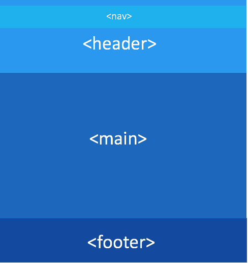
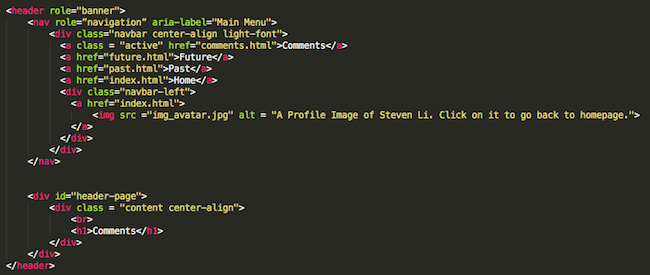
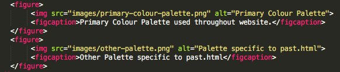
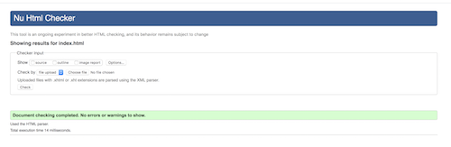

It is important to understand what sorts of features are used in the development of a professional and usable website. This page provides some comments about technical, aesthetic and accessibility features used in here.
Website Structure
There's a lot that goes on behind this website! First things first, this website based on the UTS Web Assignment Specifications that were provided.
You'll probably notice that it's made up of 4 HTML Pages and 1 CSS Stylesheet. They include:
- index.html - the home page of the website
- past.html - a story of my past
- future.html - a description of my future plans
- comments.html - comments and explanations of the creation of this website
- websystems.css - a stylesheet that all 4 HTMl pages share, assisting in the overall structure, consistency and aesthetics of the website.
So what are HTML and CSS exactly? Well if you used an analogy, you can think of HTML as the skeleton of the human. Its lines of code that create the basic structure of the website. CSS on the otherhand can be seen as the skin or the visual appearance of the site.
Below is a illustrated representation providing a basic idea of how this website was structured.
I wanted to create a structure that was not only coherent and presentable to users but also to myself or developers. The website consists of 4 semantic tags. With HTML 5, semantic tags allows us to have more meaningful structure to our website because they clearly state their purpose and can be easily identified by both web browsers and developers! The <header> tag is at the top part of each webpage. It is used to cover all content including our <nav> tag and our page title. Our <nav> tag contains a navigation bar that provides links for users to be directed to any of the 4 html pages. Following this is our <main> tag which holds our primary content. Lastly we have the <footer> which is found at the bottom of our pages and is a place to put copyright information, contact details, etc.
If we go deeper, within each semantic tag, are <div> tags. This website uses a lot of them as a way of grouping certain elements together so that it can be presented the way it is.
Many of these <div> tags and other element tags use CSS attributes such as classes and ids The reason class attribute were used is to allow elements that have the same class name in any web page to inherit the same styling properties. The id attribute on the other hand is only used to give certain properties to one element.
Navigation and Internal Links
The navigation bar plays a crucial role in joining the website. It is consistent throughout the website, being at the top of each webpage and enables users to choose where they want to be directed. At the bottom of each page is a "go to top" anchor tag, allow ease of access returning to the top of a webpage. Furthermore, a side Navigation bar was used in past.html to help users follow each section easily.
Headers
In order to create a well-structured website, header tags were used appropriately and chronologically whereby for example if a large header is used, then it is followed by a smaller header or text.
Code Explanations
We can see in the above code a general idea of how this website was structured. A semantic tag is used to hold content related it. In this case, the <header> tag holds another semantic tag, the <nav>, and our other elements. This forms our header! Much of the lines of code that belong within a specific tag have been indented for clarity. You'll notice many of that our elements utilise classes and ids, enabling us to change the visual properties of these elements!
The above screenshot is a general structure example of how we use CSS in our stylesheet. We can use selectors to call upon an element or class or id that we want to style. It's important to note that CSS follows a set of rules known as specificity. It helps determine which style to apply on an element. This example uses an element.class selector. This means that we to apply a certain style to any <h1> element that has a center-align class! You can see that it's alot more detailed as to what to style rather than simply styling all <h1> elements.
CSS Table
The following is a table that breaks down on some examples of the CSS configurations used:
| Name | Type | Purpose |
|---|---|---|
| body | element | Establishes the default style of the webpage body with a margin property of 0 and font size property of 20 pixels. |
| h1, h2, h3, p | element | Used as headings or texts for webpages and have certain style properties such as color, font-family and font-size. They are all unique and even two of the same tags may different based on specificity, the css selector involved or whether they include particualr attributes such as a class. Most font-sizes use relative length units such as em and rem, which are determined by the parent or root elements' font size that precede these elements, such as the set size of body. |
| img | element | applied a style to images including positioning, size and box shadow depending on specificity and the css selector involved. |
| span | element | applied a style to create inline circles. Found in index.html after a potential paragraph. Also was used in comments.html to style code. |
| @font-face | CSS rule | Used to call upon downloaded fonts and give them a name that can be easily accessed by properties like font-family. |
| @media | CSS rule | Used to help with the formatting and responsiveness of the website layout on smaller devices such as mobile phones. |
| .#hsc-section , #computer-section, #work-section, #background-section | id | Used unique id's for certain single div elements to style them. This included changing the background color of the div elements and stretching them to fill the device's screen. |
| .container | class | Used on elements such as Div tags that contain element related features such as text and images within, to be "compressed" into a box. |
| .project-card | class | Used to form a card or rectangular box about example projects I've done in past.html. Cards were coloured and included a box shadow with resizing and positioning to fit the center of the screen. |
| .navbar | class | Used to implement our navigation bar at the top and have it consistent in its positioning. |
| .center-align | class | Used on text related elements such as p or h1 to simply align them horizontally to the middle of the page. |
| :hover | pseudo class selector | Used to create a visual color change when user has cursor over certain elements with this selector. |
| :active | pseudo class selector | Used to create a noticeable visual underline on navbar class to indicate that user is on a specific page. |
Thought Process
I wanted to create a website that users could perceive as visually appealing but also highly responsive and interactive. I didn't want to shower readers with too much information or have too many unecessary elements. So I think much of this website's aesthestics comes from looking at other websites. Many current websites now use a flat or minalistic design approach. It's simple and easy to follow.
Responsiveness
Along with being providing visuals to our webpages, I also wanted to creative a interactive website that was responsive to certain user actions. This included implementing hovering and transition features on certain elements. The Navigation Bar is a primary example where when a person hovers over a link, the colour gradually changes from white to blue. When a user clicks on a link, they're redirected to that destination and now the link is underlined to indicate they're on that page. Images and certain <div> cards also <hover> selectors so that they could pop out or present a box shadow.
Secondly, was ensuring that the website was visually as capable and functional on smaller screen devices. This included using the media rule on top of applying particular property values on images, divs and text such as percentages, rem and em units so that their sizes can be adjusted to specific screen size.
Colour
I think personally having too many colours all up front can be off putting. Similar to wearing outfits, you want to pick colors that match well together. I decided to KISS (keep it simple, stupid). I wouldn't say I'm great at color blocking at all so I only really wanted 2-3 colors that matched and could be used to represent the structure of my website consistently in all my pages. This in general included a blue, dark grey and white color. A lighter tone of blue was also used on certain elements to distinguish themselves from others. In my past page, I used other colours like red, green and purple. The reason for this was to bring a richer feeling to readers about myself as well clearly indicate to users they're on a particular section. With all my color choices, I actually wanted to create meaning. I used a sky blue colour across my webpages to represent a sense of freedom and trust along with the fact that blue is cooling in nature to us. Other examples include colours used in past.html where a purple color is used for my background to represent compassion and preciousness, a red color for my hsc to represent interests, green for my computing experience to symbolize growth and lastly an orange color for my work experience to symbolize determination.
Typography
The main fonts I used were:
- Bebas Neue
- Light Font
- Regular Font
- Book Font
- Avenir
- Avenir Font
- Avenir Medium Font
Both are them are Sans-serif fonts, which are known for their easy to read, simplistic design. Bebas Neue has a blocky nature to it and its presensation in capital letters makes it perfect when used for large header elements. More specifically,Bebas Neue Book Font was used on title page headers, then followed by Bebas Neue Regular Font for general <h1>, <h2> headers and Light Font was used for the Navigation Bar or <h3> tags. I wanted a font that could simultaneously contrast this generally strong font and complement it. Since Bebas Neue is a sans-serif font, I realised it goes really well with Avenir when it's used for paragraph or <p> tags. Additionally a stronger Avenir font, Avenir Medium along with a <span>, was used on this page to style key terms as important. Lastly, code tag was used to also seperate itself as a line of code rather than part of a sentence by using a monospace font.
Text Positioning
Most of my content are very simple information and because of this for the most part, texts and paragraphs were horizontally centred using the text:centre-align property. This was to have the reader's attention be focused at the centre of our pages and creating a overall nice website appearance. The only exception is comments.html, which is positioned to the left, as I wanted to have a more formal, detailed structure in comparison.
Photos and Images
A picture paints a thousand words, right? I wanted to bring a lot of life into my website so images are a perfect way of doing that. It's worthy to note however with particular images, careful color consideration was taken into account so that the images they could blend into the background scheme and didn't visually clash. I didn't just simply want square shaped images unless it was like a gallery. For example, images were transparent and colours were specifically made to blend into a background color or to accompany the colour of a text. Selectors such as <hover> was used on some images to make them pop out and seem more realistic.
Layout
The website layout was purposefully done the way it was so that it could be easy to follow and each section could be distinguished. Margin and padding properties were used to create spacing between elements. Appropriate headings were used that were followed by <p> tags or small text to ensure a nice layout that can be read and is pleasing.
It's important that we create webpages that are usable and cater to all users. Making webpages that are more accessible will allow people with disabilities to follow, interact as well as better understand what is on screen. This website was designed with a set of guidelines in mind known as the W3C Web Content Accessibility Guidelines
Structure
Appropriate headings were organized in a logical order that makes it simple for users to follow and be interpreted by screen readers. This may include using a <h1> tag then following it up with a <h2> tag rather than skipping to a <h3> tag. Semantic tags were also used so that screen readers and browsers can clearly understand the sections of a webpage.
Alt Text and Captions
All my images have dedicated alternative text or captions below to ensure that if images were disabled or unable to load, users would still be able to understand the purpose of the image. This would also assist those blind or visually impaired people who were to use screen readers.
 <<<<<<< HEADFonts Size
Fonts were made to appropriate sizes for a user's screen so that they won't have difficulty reading any of the text. Relative length units such as em and rem were used for the most part instead of px as these relative units basically allow text or font sizes to be re-adjusted to the dedicated screen layout.
Spacing
Considering the W3C Accessibility guideliness, there was a recognition that the forms of Bebas Neue fonts had quite tight spacing. Due to this, the letter-spacing property was used and applied on all the webpages headers and Navigation Bar so that each letter was more spread out and easier to read. White Spaces and general spacing was used allow my images, text, content to be seperated while being eye capturing. In index.html, dots were used to indicate to readers that a particular section had ended. In past.html, different background colours were used to indicate a different section.
Fonts Type
Bebas Neue and Avenir Fonts were used throughout the website. Different types of Bebas Neue fonts such as Regular, Book and Light were chronologically used to create dinstinction between title page headers, general headers like <h1> and <h2> and smaller headers such as <3> . As they are San-serif fonts, it makes these fonts a lot easier to read on screen. Avenir Medium along with the <span> was used on this page to place emphasis on key terms which allows better distinction and lastly, <code> tag was used to distinguish itself as a line of code rather than part of a sentence by using a monospace font.
Ease of Navigation
For those who have trouble using a mouse, this website can be navigated using a keyboard. The tab key on one's keyboard can be used to move between different anchor tags or elements. The enter key can then be used to select a anchor tag for example, so that a user can be direct to the specified page.
Internal Reference links have also been used for ease of navigation. Some elements such as "go to top", the profile bubble, or side nav bar in past.html will allow users to jump immediately to the top of the page or a specific section enabling and easier way of navigating if usings don't have a mouse to scroll down or back up.
Tables
The <th> tag which stands for table headers, was used along with the scope attribute to define what were headers for a columns and thus allow screen readers to interpret that it's a header.
Colour Contrast
Attention to this website's colour contrast was also carefully considered, enabling information to read easily. So long as large enough text is used, the particular blue background colour of the webpage contrasted with the white foreground text or vise versa, is more than enough under the WCAG Standards Level AA, which requires a ratio of 3:1. In the event that we do have smaller text such as the use of <p> tags, a dark grey colour is used to contrast with white, meeting WCAG Standards Level AAA. Third-party websites such as Color Safe and Contrast Finder were used to test the foreground and background colors of the webpage with pleasant results.
Browser Compatibility
Accessibility also means allow a range of browsers to be compatible with your website. This website is compatible on Google Chrome, Safari and Firefox. This website was also successfully tested on an Android device's built-in internet app.
Different Screen Sizes
This website was successfully tested on different screen sizes including mobile devices, laptops and desktops. The media rule coupled with changes in percentages and use of rem and em units were used so that content could fit accordingly to the dedicated screen. An example can be found on index.html where the gallery is display as two rows of three on general laptop or large screen sizes. On smaller mobile devices however, the gallery is compressed and only one image will display at a time to ensure images are still viewable.
Fonts Size
Fonts were made to appropriate sizes for a user's screen so that they won't have difficulty reading any of the text. Relative length units such as em and rem were used for the most part instead of px as these relative units basically allow text or font sizes to be re-adjusted to the dedicated screen layout.
Spacing
Considering the W3C Accessibility guideliness, there was a recognition that the forms of Bebas Neue fonts had quite tight spacing. Due to this, the letter-spacing property was used and applied on all the webpages headers and Navigation Bar so that each letter was more spread out and easier to read. White Spaces and general spacing was used allow my images, text, content to be seperated while being eye capturing. In index.html, dots were used to indicate to readers that a particular section had ended. In past.html, different background colours were used to indicate a different section.
Fonts Type
Bebas Neue and Avenir Fonts were used throughout the website. Different types of Bebas Neue fonts such as Regular, Book and Light were chronologically used to create dinstinction between title page headers, general headers like <h1> and <h2> and smaller headers such as <3> . As they are San-serif fonts, it makes these fonts a lot easier to read on screen. Avenir Medium along with the <span> was used on this page to place emphasis on key terms which allows better distinction and lastly, <code> tag was used to distinguish itself as a line of code rather than part of a sentence by using a monospace font.
Internal Reference Links
Some elements such as "go to top" or side nav bar in past.html will allow users to jump immediately to the top of the page or a specific section enabling and easier way of navigating if usings don't have a mouse to scroll down or back up.
Tables
The <th> tag which stands for table headers, was used along with the scope attribute to define what were headers for a columns and thus allow screen readers to interpret that it's a header.
Colour Contrast
Attention to this website's colour contrast was also carefully considered, enabling information to read easily. So long as large enough text is used, the particular blue background colour of the webpage contrasted with the white foreground text or vise versa, is more than enough under the WCAG Standards Level AA, which requires a ratio of 3:1. In the event that we do have smaller text such as the use of <p> tags, a dark grey colour is used to contrast with white, meeting WCAG Standards Level AAA. Third-party websites such as Color Safe and Contrast Finder were used to test the foreground and background colors of the webpage with pleasant results.
Browser Compatibility
Accessibility also means allow a range of browsers to be compatible with your website. This website is compatible on Google Chrome, Safari and Firefox. This website was also successfully tested on an Android device's built-in internet app.
Different Screen Sizes
This website was successfully tested on different screen sizes including mobile devices, laptops and desktops. The media rule coupled with changes in percentages and use of rem and em units were used so that content could fit accordingly to the dedicated screen. An example can be found on index.html where the gallery is display as two rows of three on general laptop or large screen sizes. On smaller mobile devices however, the gallery is compressed and only one image will display at a time to ensure images are still viewable.


The above is proof to readers that this all that this website's CSS stylsheet has validated through the W3C CSS Validation Service.
The above is proof to readers that this all that this webpage, and for organisation sakes, all the website's pages have validated through the W3 Nu Html Checker.
Overall I think I'm quite happy with how I made my website. I believe I managed my time well and it's really satisfying to say that you built a website from scratch that can now be uploaded online! I learnt so much from this assignment, not just simply practicing the HTML and CSS language, but also how to use the UNIX Command line, how to express my thoughts to others, what are some considerations you have think about for your webpages such as the technical, aesthetic and accessibility aspects which will be further discussed upon below. I would really love to build upon this website by potentially adding on Javascript next time. =======
Overall I think I'm quite happy with how I made my website. I believe I managed my time well and it's really satisfying to say that you built a website from scratch that can now be uploaded online. I learnt so much from this assignment, not just simply practicing the HTML and CSS language, but also how to use the UNIX Command line, how to express my thoughts to others, what are considerations you have think about for your webpages such as the technical, aesthetic and accessibility aspects which will be further discussed upon below. I would really love to build upon this website by potentially adding on Javascript next time. >>>>>>> 6381106a4d906cab1a16bfe374b82449d76c2bab